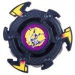

Metal Dragoon Bearing Stinger
Note: Since this article was published, significant new and more accurate information has come to light, and as a result, this article must be updated. Please do not take all of the information here as the truth, as more extensive testing on the parts of this Beyblade has since provided information which conflicts with and/or expands upon the understanding of these parts this article was based upon. However, the Overall section has been updated based on this new information, and as such is a reliable source of information. Updates will be posted on the main page when completed.
| Metal Dragoon Bearing Stinger | |
|  | |
| Number: | 18 |
|---|---|
| System: | 4-Layer |
| Type: | Balance |
Contents
Name Variation
Hasbro released this product under the name Bearing Stinger.
Attack Ring (AR): Scissor Cutter
- Weight: 5 grams
The AR of Metal Dragoon Bearing Stinger, Scissor Cutter, is thin and light with decent balance. It is not useful for Survival or Defense purposes, but it has minor usage as a Smash Attack AR. The normal version is far too fragile to use, but the Phantom Force version is more durable, albeit still quite fragile, and this version can be used for Smash Attack, though its poor range and some Recoil issues make it less effective than Attack Rings such as Triple Wing, Cross Griffon and Triple Tiger.
Use in Smash Attack Customization
While outclassed, Scissor Cutter can be used to decent effect in standard Smash Attack setups, such as the following:
- AR: Scissor Cutter (Metal Dragoon Bearing Stinger)
- WD: Wide Defense
- BB: Grip Base (Dragoon Grip Attacker)
The fast speed of Grip Base combined with the externalized weight distribution of Wide Defense produces excellent speed, and has enough weight to handle the moderate Recoil Scissor Cutter produces, allowing for effective Smash Attack.
Weight Disk (WD): Heavy
See Heavy (WD).
Blade Base (BB): Bearing Base
- Weight: 8 grams
Bearing Base is the important part of this Beyblade. The tip of the Bearing Base is free-spinning. Because of this, when the Beyblade is hit by an opposing Beyblade, it absorbs much of the damage and does not lose spin as easily. The shaft of Bearing Base is held in place by two bearings (one of the two is plastic, but it can be replaced by NSK bearing), an attribute shared only with Burning Kerberus and Takara's Zeus. Because of these double bearings, Bearing Base can regain its balance quickly after being hit. The tip of this shaft is very sharp and made of a plastic that has low friction when compared to other tips. It is one of the best tips for survival Beyblades.
Mold Variations
Hasbro's Bearing Base has a slight but important difference. The tip of the Beyblade is slightly sharper and made out of a harder plastic, resulting in more survival potential, but substantially less defense potential.
Using Bearing Base Shaft in Other Blade Bases
An important trick to learn using the Bearing Base is that the shaft can be removed and put into the casing of Wolborg's shaft. This will allow you to use Bearing Stinger's tip in 5-layer combos, which affords you the advantage of using a left spin direction with this tip, along with using Wolborg 2's BB. This can even be extended into making 6-Layer combos, as the SG of Wolborg can be placed in Dragoon V2's BB. Using this method, you can use Bearing Base's tip in conjunction with SP.
Use in Zombies
Bearing Base was the only BB choice for first generation Zombies. It was effective for survival, spin-stealing, and life after death. Even after the first generation, the shaft of Bearing Base could still be used in 5-layer and 6-layer Zombie combos.
Use in First Generation Zombies
NOTE: The Roller Defense Ring Modification the following section is based upon has been officially declared illegal under WBO rules, and is being kept here for informational purposes.
Before the release of Wolborg, the only BB available for players wanting to use a Zombie strategy -- or create any meaningful survival type -- was Bearing Base. The problem was that since this Beyblade did not use an SG, it was difficult to change its spin direction. However, using the AR of Roller Defenser in a certain fashion, players were able to change spin direction.
An example combo would be:
- AR: Roller Defense Ring (Roller Defenser)
- WD: Wide Survivor
- BB: Bearing Base (Metal Dragoon Bearing Stinger)
Use in Second Generation Zombies
After the release of Wolborg and Wolborg 2, players had considerably more options when it came to building Zombies. However, Bearing Base's tip was still a strong choice. Neither Wolborg nor Wolborg 2's tips provide the same pure survival potential. Luckily, the casing for Wolborg's shaft allowed the Bearing Base shaft to be exchanged with it. Unfortunately, the ability to use two bearings is lost.
An example combo would be:
- AR: Tiger Defenser (Driger S)
- WD: Wide Survivor
- SG: Left SG (Bearing Version) (Wolborg)
- Shaft: Bearing Base (Metal Dragoon Bearing Stinger)
- BB: Defense Grip Base 2 (Wolborg 2)
Use in Third Generation Zombies
Even during the 6-layer generation, Bearing Base's shaft could still be used to strong results. The trick is similar to second generation Zombies.
An example combo would be:
- AR: Twin Horn (Takara) (Gabriel)
- WD: Wide Survivor
- SG: Left SG (Bearing Version) (Wolborg)
- Shaft: Bearing Base (Metal Dragoon Bearing Stinger)
- SP: Defense Ring (Voltaic Ape)
- BB: Customize Grip Base (Dragoon V2)
Use in Survival Combos
Due to Bearing Base's excellent endurance, it can be very useful in an endurance combo, though due to the dominance of Zombie customizations, these are rarely seen.
An example combo would be:
- AR Wing Cross (Bistool)
- WD Ten Balance
- BB Bearing Base (Metal Dragoon Bearing Stinger) With two NSK Shield Bearings.
This combo has great balance and terrific endurance, meaning it will generally win unless knocked out early, and can even best top-tier compact and balance combos, such as 10B-Bistool.
Other Versions
- Bearing Stinger - Phantom Force Version (Clear Blue)
Gallery
Metal Dragoon Bearing Stinger - Original Version
Metal Dragoon Bearing Stinger - Phantom Force
Overall
While the main attraction of Metal Dragoon Bearing Stinger, its Shaft, is unparalleled in terms of Survival, its poor stability and the availability of more versatile alternatives, in particular Burning Kerberous' Neo SG (Double Bearing Version) Shaft, combined with the limitations of Metal Dragoon Bearing Stinger's parts as part of the Four Layer System means that Burning Kerberous is generally a better choice, especially given Metal Dragoon Bearing Stinger's relative rarity. This Beyblade is not a must-have, but it is nevertheless a welcome addition to any collection.